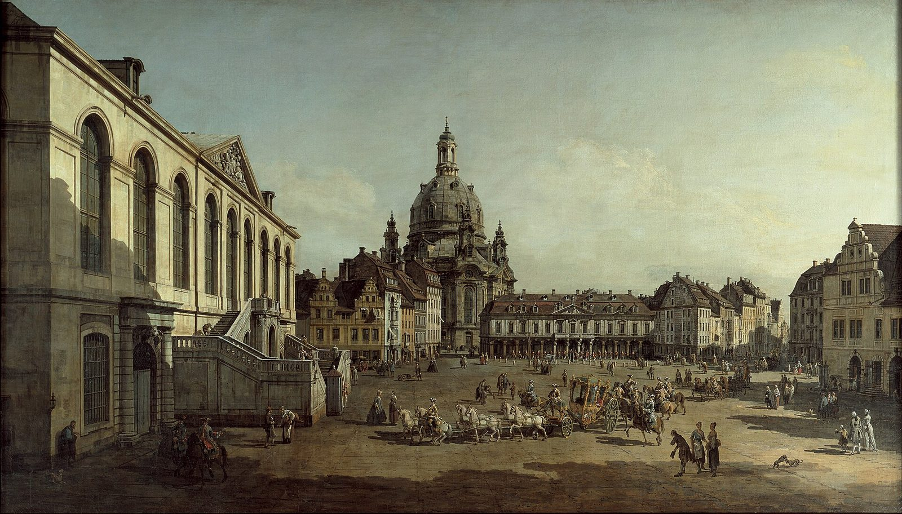

Grand TourSéquences prêtes à l’emploi · Français, anglais · Tous niveaux

Bernardo Bellotto, dit Canaletto le Jeune, Le Neumarkt de Dresde vu depuis le Jüdenhof, vers 1748-1749, huile sur toile, 136 cm sur 236 cm, Gemäldegalerie Alte Meister, Staatliche Kunstsammlungen Dresden (Gal.-Nr. 610). Domaine public. Reproduction via Wikimedia Commons. Voir la notice
Le parcours sur l’art fait partie intégrante de ce travail.
Un devoir se construit comme cet édifice : des fondations (la lecture du sujet), des piliers (les parties), des arcades qui relient les espaces (les transitions), et, tout en haut, un dôme qui rassemble l’ensemble (la conclusion). Au centre du tableau, la Frauenkirche : détruite en février 1945, elle a été rebâtie pierre à pierre et rouverte en 2005.
Méthodologie · Lettres · Lycée général et technologique · Version courte pour le baccalauréat professionnel
De la spirale à la rédaction : la spirale de Gorse du devoir
Construire un devoir comme un édifice : de l’amorce à l’ouverture, une tournure juste à chaque tour.
Mise en situation
Observer, tourner, rédiger
Passer de la spirale de Gorse à une rédaction complète, étape après étape.
Sans JavaScript, tous les onglets restent visibles à la suite.
Grand Tour
De la spirale à la rédaction
La spirale de Gorse du devoir · Dissertation et commentaire · Lycée général et technologique · Version courte pour le baccalauréat professionnel
Une leçon de 55 minutes, minutée sur 52 minutes, pour construire un devoir entier, de l’amorce à l’ouverture, avec les tournures soutenues à chaque tour de la spirale.
Cette page rassemble tout ce que nous avons travaillé : lire le sujet avec la spirale de Gorse, trouver la problématique et le plan, puis parcourir la spirale de la rédaction, de l’introduction à la conclusion, en posant à chaque tour les tournures justes. Un exemple complet, sur un seul sujet, montre le chemin de la conception à la rédaction : « La poésie doit-elle dénoncer ? », avec Hugo, La Fontaine, Rimbaud et Baudelaire.
La spirale de la rédaction, en neuf tours et une pointe. L’exemple complet, en six étapes. L’étude de la langue, en trois paliers. Une version courte pour le baccalauréat professionnel. Tout le dossier à télécharger, en PDF, Word et LibreOffice, et un PDF qui rassemble tout.
Méthode de la spirale conçue par Madame Carole Paoli Pompougnac
Pour : lycée général et technologique, épreuve anticipée de français, dissertation et commentaire. Une version courte est prévue pour le baccalauréat professionnel, à l’écrit argumentatif.
Les activités de la leçon
CECompréhension écrite5 à 25 : la spirale de la rédaction, l’exemple, étapes 1 à 3
COCompréhension orale25 à 30 : écouter l’introduction lue à voix haute, repérer les trois tours
PEProduction écrite30 à 44 : rédiger une transition et un bilan partiel ; 47 à 52 : trace écrite
POProduction orale0 à 5 : deux phrases sur le tableau ; 44 à 47 : lire sa transition
PIInteraction orale15 à 25 : à deux, choisir une tournure par tour et la justifier
On ne cherche pas à faire réciter des formules. Chaque tournure répond à un geste précis du devoir : entrer dans le sujet, poser la question, annoncer, argumenter, relier, nuancer, conclure, ouvrir. La spirale donne l’ordre de ces gestes ; l’exemple montre qu’ils tiennent ensemble, comme les pierres d’un même édifice. En version prof, les tournures de l’exemple sont surlignées.
La spirale de Gorse sert d’abord à lire le sujet. Elle sert ensuite à écrire. On la parcourt de l’extérieur vers le centre : de l’amorce à l’ouverture, chaque tour porte ses tournures. À la pointe, on passe à la rédaction.
Spirale de la rédaction. Côté extérieur : l’introduction. Au fil des tours : le développement. Vers le centre : la conclusion et l’ouverture. Pointe : je passe à la rédaction. Le détail de chaque tour est dans la liste.
1
L’amorce. J’entre dans le sujet par un fait précis : une citation, une scène, une date, une œuvre. Jamais « De tout temps ».
Partie 1, mettre en lumière
Cette scène cristallise…
Le texte esquisse…
L’auteur nous donne à voir…
Dans l’exemple : « L’enfant avait reçu deux balles dans la tête. » Par ce vers d’une sécheresse terrible, Victor Hugo ouvre « Souvenir de la nuit du 4 ».
2
La problématique. Je reformule le sujet, je définis ses mots clés, puis je pose la question qui guidera tout le devoir.
Partie 4, annoncer la problématique
C’est précisément cette tension entre [X] et [Y] qui nourrit notre réflexion.
Dès lors, dans quelle mesure peut-on affirmer que… ?
On est alors en droit de se demander comment…
Dans l’exemple : C’est précisément cette tension entre l’accusation et le dévoilement silencieux qui nourrit notre réflexion.
3
L’annonce du plan. J’annonce les parties en une ou deux phrases, dans l’ordre, sans écrire « dans une première partie ».
Partie 3, introduire un argument
Il convient tout d’abord d’observer que…
En premier lieu…
Dans l’exemple : Il convient tout d’abord d’observer que la poésie peut dénoncer, et avec force. Nous verrons ensuite qu’elle n’y est pas tenue. Enfin, nous verrons que sa force propre est d’éveiller le regard du lecteur.
4
Les arguments. Dans chaque partie, deux ou trois paragraphes : un argument, un exemple cité, une analyse. Dans le commentaire, ce sont les axes de lecture.
Partie 3, introduire un argument
En premier lieu…
Force est de constater que…
Partie 3, ajouter ou amplifier
Qui plus est…
À cela s’ajoute le fait que…
Bien plus, l’auteur va jusqu’à…
Partie 1, présenter l’exemple
L’écrivain met en exergue…
Le texte met en accusation…
Il lève le voile sur…
La plume de l’auteur brosse le portrait de…
Partie 2, analyser l’exemple
Ce choix stylistique invite le lecteur à s’interroger sur…
Dès lors, il apparaît que…
Cette image revêt une dimension universelle…
Ce motif fait écho à…
Dans l’exemple : Force est de constater que la poésie peut dénoncer. En premier lieu, Hugo met en accusation le meurtre d’un enfant.
5
Les transitions. Entre deux parties : une phrase qui fait le point, une phrase qui ouvre la partie suivante.
Partie 3, opposer ou nuancer
En dépit de cette apparence…
À rebours de cette première lecture…
Partie 2, nuancer
Sous couvert de légèreté, l’auteur aborde en réalité…
Dans l’exemple : En dépit de cette apparence, tous les poèmes ne prennent pas les armes.
6
La nuance. Je limite, je complique : un exemple résiste, une lecture ne suffit pas.
Partie 3, opposer ou nuancer
Toutefois, un regard plus attentif révèle que…
Force est pourtant de reconnaître que…
A contrario…
Partie 2, nuancer ou complexifier
Toutefois, cette vision mérite d’être tempérée par…
L’ambivalence de ce passage réside dans…
Dans l’exemple : Force est pourtant de reconnaître que le poème ne nomme ni coupable ni guerre.
7
Le bilan partiel. À la fin de chaque partie, une phrase qui répond en partie à la problématique.
Partie 3, conclure une partie
Ainsi se dessine…
C’est donc à travers ce prisme que…
En somme, l’auteur parvient à…
Dans l’exemple : Ainsi se dessine une première réponse : la poésie peut être une arme, grave ou ironique.
8
La conclusion. Je reprends le chemin parcouru, partie par partie, puis je réponds nettement à la problématique.
Partie 2, tirer une conclusion
Dès lors, il apparaît que…
Partie 2, souligner la portée
Au-delà de la simple anecdote…
Partie 3, conclure
En somme…
Dans l’exemple : Dès lors, il apparaît que la poésie peut dénoncer, mais qu’elle n’en a pas le devoir.
9
L’ouverture. J’élargis vers une autre œuvre, une autre époque, un autre art.
Partie 4, élargir en conclusion
Cette réflexion trouve un écho singulier dans…
Ce questionnement préfigure déjà les préoccupations de…
À l’instar de [autre auteur, autre œuvre], l’écrivain démontre que…
Dans l’exemple : Cette réflexion trouve un écho singulier dans la peinture : la vue de Dresde par Bellotto.
10
Je passe à la rédaction. Chaque tour devient une phrase ou un paragraphe. J’écris au propre, dans l’ordre : l’introduction (tours 1 à 3), le développement (tours 4 à 7, pour chaque partie), la conclusion (tours 8 et 9). Je relis : une tournure par idée, jamais deux fois la même ; chaque citation entre guillemets, avec sa source.
La spirale en dix étapes. Une phrase et une tournure par étape.
1. L’amorce. Je commence par un fait précis : une citation, une scène, une œuvre. Cette scène cristallise…
2. La problématique. Je pose la question qui guide tout le devoir. Dès lors, dans quelle mesure… ?
3. L’annonce du plan. J’annonce mes parties, dans l’ordre. Il convient tout d’abord d’observer que…
4. Les arguments. Pour chaque idée : un argument, une citation, une explication. En premier lieu… Qui plus est…
5. Les transitions. Entre deux parties, une phrase fait le lien. En dépit de cette apparence…
6. La nuance. Je montre une limite, un autre point de vue. Toutefois…
7. Le bilan partiel. À la fin d’une partie, je dis ce que j’ai prouvé. En somme…
8. La conclusion. Je réponds clairement à la question du sujet. Dès lors, il apparaît que…
9. L’ouverture. J’ouvre vers une autre œuvre ou un autre art. Cette réflexion trouve un écho singulier dans…
10. Je passe à la rédaction. Chaque tour devient une phrase. J’écris dans l’ordre, puis je relis.
Les tournures viennent des quatre parties de la fiche « Tournures soutenues » : 1, intention de l’auteur ; 2, interprétation ; 3, connecteurs ; 4, introduction et conclusion. On ne demande pas de tout employer : une ou deux tournures par tour suffisent, jamais deux fois la même dans une copie.
Un exemple complet, de la conception à la rédaction
Un seul sujet, du début à la fin : « La poésie doit-elle dénoncer ? » Six étapes, de la lecture du sujet à l’ouverture. En version prof, les tournures sont surlignées.
Le corpus, déjà lu en classe
L’enfant avait reçu deux balles dans la tête.
Le logis était propre, humble, paisible, honnête ;
On voyait un rameau bénit sur un portrait.
Une vieille grand’mère était là qui pleurait.
Victor Hugo, « Souvenir de la nuit du 4 », in Les Châtiments, Hetzel-Quantin, 1882, p. 99. Texte établi d’après Wikisource. L’édition écrit « grand’mère ».
La raison du plus fort est toujours la meilleure :
Nous l’allons montrer tout à l’heure.
Jean de La Fontaine, « Le Loup et l’Agneau », Fables, livre I, fable X, éd. Bernardin-Béchet, 1874, p. 41. Texte établi d’après Wikisource.
Les parfums ne font pas frissonner sa narine ;
Il dort dans le soleil, la main sur sa poitrine
Tranquille. Il a deux trous rouges au côté droit.
Arthur Rimbaud, « Le Dormeur du Val », octobre 1870, in Œuvres, texte établi par Paul Hartmann, Mercure de France, 1958, p. 53. Texte établi d’après Wikisource.
Le Poëte est semblable au prince des nuées
Qui hante la tempête et se rit de l’archer ;
Exilé sur le sol au milieu des huées,
Ses ailes de géant l’empêchent de marcher.
Charles Baudelaire, « L’Albatros », in Les Fleurs du mal, Poulet-Malassis et de Broise, 1861, p. 12. Texte établi d’après Wikisource. L’édition écrit « Poëte ».
La Nature est un temple où de vivants piliers
Laissent parfois sortir de confuses paroles ;
L’homme y passe à travers des forêts de symboles
Qui l’observent avec des regards familiers.
Charles Baudelaire, « Correspondances », in Les Fleurs du mal, Poulet-Malassis et de Broise, 1861, p. 15. Texte établi d’après Wikisource.
Étape 1. Je lis le sujet avec la spirale de Gorse
Sujet : « La poésie doit-elle dénoncer ? » Vous répondrez en vous appuyant sur les poèmes étudiés.
1
Je remarque. Le sujet est une question fermée, avec un verbe fort : « doit-elle ». Il ne demande pas si la poésie peut dénoncer, mais si elle le doit.
2
Je repère. Les mots clés. « La poésie » : tous les poèmes, de la fable au sonnet. « Doit » : un devoir, une mission. « Dénoncer » : faire connaître une injustice pour la condamner.
3
Je comprends. L’enjeu est la fonction de la poésie : une arme, ou un art du regard ? Dans le corpus, Hugo dénonce, La Fontaine raille, Rimbaud dévoile, Baudelaire parle du poète et du monde.
4
J’anticipe. Les pièges : répondre « oui, toujours » efface Rimbaud ; répondre « non, jamais » efface Hugo ; réciter un cours sur l’engagement, sans citer, ne répond pas au sujet.
5
Je trouve le sens. La poésie peut dénoncer, mais elle n’y est pas tenue. Sa force propre est d’éveiller le regard du lecteur, et c’est souvent ce regard qui juge.
Étape 2. La problématique et le plan
Dès lors, dans quelle mesure peut-on affirmer que la poésie a pour devoir de dénoncer ?
I. La poésie peut dénoncer, et avec force.
Hugo met en accusation un crime ; La Fontaine tourne en dérision la loi du plus fort.
II. Mais elle n’y est pas tenue : elle peut dévoiler sans accuser.
Rimbaud dévoile la mort sans nommer de coupable ; Baudelaire érige l’albatros en symbole du poète.
III. Sa force propre : éveiller le regard du lecteur.
« Correspondances » fait du monde un langage à déchiffrer ; le silence de Rimbaud laisse le lecteur juger.
Le plan est dialectique : oui, mais, donc. La troisième partie ne coupe pas la poire en deux ; elle déplace la question.
Étape 3. La spirale de la rédaction, remplie
Spirale de la rédaction remplie sur le sujet. Quelques mots par tour : le détail est rédigé aux étapes 4 à 6.
Étape 4. L’introduction rédigée
Tour 1, l’amorce ; tour 2, la problématique ; tour 3, l’annonce du plan.
« L’enfant avait reçu deux balles dans la tête. » Par ce vers d’une sécheresse terrible, Victor Hugo ouvre « Souvenir de la nuit du 4 », dans Les Châtiments : cette scène cristallise la colère d’un poète en exil contre le pouvoir qui a fait tirer sur la foule. En octobre 1870, Rimbaud, dans « Le Dormeur du Val », évoque lui aussi la mort d’un jeune homme, mais sans accuser personne. C’est précisément cette tension entre l’accusation et le dévoilement silencieux qui nourrit notre réflexion. Le sujet ne demande pas si la poésie peut dénoncer, mais si elle le « doit », c’est-à-dire si dénoncer est pour elle un devoir. Dès lors, dans quelle mesure peut-on affirmer que la poésie a pour devoir de dénoncer ? Il convient tout d’abord d’observer que la poésie peut dénoncer, et avec force. Nous verrons ensuite qu’elle n’y est pas tenue, puisqu’elle peut dévoiler sans accuser. Enfin, nous verrons que sa force propre est d’éveiller le regard du lecteur.
Étape 5. Un paragraphe complet par partie
Tours 4, 6 et 7 : argument, exemple cité, analyse, nuance, bilan partiel.
I. La poésie peut dénoncer, et avec force
Force est de constater que la poésie peut dénoncer, et le faire avec une rare violence. En premier lieu, Hugo, dans « Souvenir de la nuit du 4 », met en accusation le meurtre d’un enfant : « L’enfant avait reçu deux balles dans la tête. » Le contraste avec le logis « propre, humble, paisible, honnête » confère au poème une tonalité d’indignation : rien, dans cette maison, n’appelait la violence. Dès lors, il apparaît que la simple description devient un réquisitoire. Qui plus est, la dénonciation peut prendre un ton plus léger. Sous couvert de légèreté, La Fontaine aborde en réalité la loi du plus fort, dès la morale qui ouvre la fable : « La raison du plus fort est toujours la meilleure : / Nous l’allons montrer tout à l’heure. » L’adverbe « toujours » sonne comme une ironie : l’écrivain tourne en dérision une « raison » qui n’est qu’une force. Ainsi se dessine une première réponse : la poésie peut être une arme, grave ou ironique.
II. Mais elle n’y est pas tenue : elle peut dévoiler sans accuser
Toutefois, un regard plus attentif révèle que la poésie n’est pas tenue de dénoncer. A contrario, Rimbaud, dans « Le Dormeur du Val », brosse le portrait d’un soldat qui semble dormir : « Il dort dans le soleil, la main sur sa poitrine / Tranquille. » Le rejet de l’adjectif « Tranquille » prolonge ce calme, et le lecteur s’y laisse prendre. Le dernier vers met à nu la blessure : « Il a deux trous rouges au côté droit. » Force est pourtant de reconnaître que le poème ne nomme ni coupable ni guerre : il dévoile, il n’accuse pas. À cela s’ajoute le fait que la poésie peut parler du poète lui-même. Dans « L’Albatros », Baudelaire érige l’oiseau en symbole du poète : « Exilé sur le sol au milieu des huées, / Ses ailes de géant l’empêchent de marcher. » Cette image revêt une dimension universelle : celle de l’artiste incompris de la foule. En somme, la poésie peut dévoiler, ou se dire elle-même, sans faire de la dénonciation un devoir.
III. Sa force propre : éveiller le regard du lecteur
Il convient enfin d’observer que la poésie a d’abord le pouvoir d’éveiller le regard. Dans « Correspondances », Baudelaire nous donne à voir un monde à déchiffrer : « L’homme y passe à travers des forêts de symboles / Qui l’observent avec des regards familiers. » Ce choix stylistique invite le lecteur à s’interroger sur ce qu’il croit voir : la métaphore fait de la nature un « temple » qui parle. Bien plus, ce regard éveillé peut rendre la dénonciation plus forte. Le silence de Rimbaud nous conduit à penser que le lecteur, une fois le dernier vers lu, juge lui-même la guerre que le poème ne nomme pas : l’œuvre révèle en filigrane ce que le poète tait. Toutefois, cette vision mérite d’être tempérée par l’exemple de Hugo, qui nomme et accuse. En somme, l’auteur parvient à faire du lecteur un témoin : la poésie ne dénonce pas toujours, mais elle apprend à voir, et ce regard juge.
Étape 6. Les transitions et la conclusion, avec l’ouverture
Tour 5, les transitions ; tours 8 et 9, la conclusion et l’ouverture.
Transition de la partie I à la partie II
En dépit de cette apparence, tous les poèmes ne prennent pas les armes. À rebours de cette première lecture, il faut se demander si un poème qui n’accuse personne manque pour autant à sa mission.
Transition de la partie II à la partie III
C’est donc à travers ce prisme qu’il faut relire le sujet : si la poésie n’est pas tenue de dénoncer, que fait-elle, au juste, à son lecteur ?
Conclusion et ouverture
Dès lors, il apparaît que la poésie peut dénoncer, avec la colère de Hugo ou l’ironie de La Fontaine, mais qu’elle n’en a pas le devoir. Rimbaud dévoile sans accuser ; Baudelaire fait de l’albatros le symbole du poète, et du monde un langage à déchiffrer. Au-delà de la simple dénonciation, la poésie éveille un regard, et c’est souvent ce regard qui juge. Cette réflexion trouve un écho singulier dans la peinture. Vers 1749, Bernardo Bellotto peint le Neumarkt de Dresde et le dôme de la Frauenkirche, sans rien dénoncer. Pourtant, depuis la destruction de la ville en février 1945, ce tableau témoigne de ce que la guerre a anéanti : une œuvre qui ne dénonce rien peut devenir, avec le temps, un témoin.
CE 1. Dans l’introduction, la problématique est :
A. « Dès lors, dans quelle mesure peut-on affirmer que la poésie a pour devoir de dénoncer ? »
B. « L’enfant avait reçu deux balles dans la tête. »
CE 2. Rimbaud, dans « Le Dormeur du Val » :
A. accuse nommément un général.
B. dévoile la mort, sans accuser personne.
CE 3. L’ouverture parle :
A. d’un tableau de Bellotto, la vue de Dresde.
B. du plan de la partie II.
Faire lire l’introduction à voix haute : les élèves lèvent la main à chaque changement de tour (amorce, problématique, annonce). Pour chaque paragraphe, demander de retrouver l’argument, la citation, l’analyse, la nuance et le bilan. La troisième partie reprend Rimbaud sous un autre angle : c’est voulu, et c’est permis, si l’analyse avance.
Pour l’écrit argumentatif : la même spirale, en cinq tours, et cinq tournures seulement.
1
Je présente le sujet. Un exemple précis, puis la question.
Tournure : « Cette scène cristallise… »
2
Ma première idée. Une idée, un exemple, une explication.
Tournure : « En premier lieu… »
3
Ma deuxième idée. J’ajoute un autre exemple.
Tournure : « Qui plus est… »
4
La nuance. Je montre une limite.
Tournure : « Toutefois… »
5
Je conclus. Je réponds nettement à la question.
Tournure : « En somme… »
Le texte modèle
Sujet : « La poésie peut-elle dénoncer une injustice ? »
Cette scène cristallise la colère de Victor Hugo : « L’enfant avait reçu deux balles dans la tête. » La poésie peut-elle dénoncer une injustice ? En premier lieu, Hugo accuse le pouvoir qui a tué un enfant dans un logis « propre, humble, paisible, honnête ». Qui plus est, La Fontaine se moque de la loi du plus fort : « La raison du plus fort est toujours la meilleure ». Toutefois, Rimbaud, dans « Le Dormeur du Val », n’accuse personne : il montre seulement « deux trous rouges au côté droit ». En somme, la poésie peut dénoncer une injustice, mais elle peut aussi la faire sentir, sans la nommer.
PE À votre tour
Sujet : « Une chanson peut-elle dénoncer une injustice ? » Choisissez une chanson que vous connaissez. Écrivez cinq phrases, une par tour, avec les cinq tournures.
On attend : un exemple précis (titre de la chanson, artiste, une idée de la chanson), la question, deux idées reliées par « En premier lieu » et « Qui plus est », une limite introduite par « Toutefois », une réponse nette introduite par « En somme ». On valorise l’exemple précis plus que le choix de la chanson.
Les tournures ne tiennent que si la phrase est juste. Trois paliers, du plus simple au plus exigeant : les connecteurs, les subordonnées, les modes après les verbes d’analyse.
Palier 1. Les connecteurs
Un connecteur dit le lien logique entre deux idées. Introduire : « En premier lieu », « Force est de constater que ». Ajouter : « Qui plus est », « À cela s’ajoute le fait que ». Opposer ou nuancer : « Toutefois », « A contrario », « En dépit de cette apparence ». Conclure : « En somme », « Ainsi se dessine ».
CE Exercice 1. Classez ces connecteurs
Qui plus est ; A contrario ; En premier lieu ; En somme ; Bien plus ; Toutefois ; Force est de constater que ; Ainsi se dessine.
Quatre colonnes : introduire, ajouter, opposer, conclure.
« Toutefois » sert à :
A. ajouter une idée.
B. opposer ou nuancer.
Introduire : En premier lieu ; Force est de constater que. Ajouter : Qui plus est ; Bien plus. Opposer : A contrario ; Toutefois. Conclure : En somme ; Ainsi se dessine. Version dys : B.
PE Exercice 2. Complétez avec le connecteur juste
(1) ________, Hugo met en accusation le meurtre d’un enfant. (2) ________, La Fontaine tourne en dérision la loi du plus fort. (3) ________, Rimbaud n’accuse personne. (4) ________, la poésie peut dénoncer, mais elle n’y est pas tenue.
(1) En premier lieu. (2) Qui plus est. (3) A contrario, ou Toutefois. (4) En somme.
Palier 2. Les subordonnées
La complétive complète un verbe : « Il apparaît que la poésie peut dénoncer. » La relative complète un nom : « un soldat qui semble dormir ». La concessive admet un fait sans en tirer la conséquence attendue : « Bien que le poème n’accuse personne, le lecteur juge la guerre. » La causale donne la raison : « parce que le sujet dit « doit » ».
CE Exercice 3. Nommez la subordonnée soulignée
Hugo peint un logis qui n’appelait pas la violence.
Force est de constater que la poésie peut dénoncer.
Bien que Rimbaud ne nomme personne, le dernier vers accuse.
Le sujet est piégé parce qu’il emploie le verbe « devoir ».
« qui n’appelait pas la violence » est :
A. une relative.
B. une complétive.
1. Relative. 2. Complétive. 3. Concessive. 4. Causale. Version dys : A.
PE Exercice 4. Reliez avec « bien que »
« Le poème ne nomme pas la guerre. Le lecteur la condamne. » ; « La fable fait sourire. Elle accuse la loi du plus fort. »
Bien que le poème ne nomme pas la guerre, le lecteur la condamne. Bien que la fable fasse sourire, elle accuse la loi du plus fort. Après « bien que », le subjonctif : « fasse ».
Palier 3. Les modes après les verbes d’analyse
Indicatif après ce qui affirme ou constate : souligner que, révéler que, il apparaît que, force est de constater que, nous conduit à penser que. « Il apparaît que la poésie peut dénoncer. »
Subjonctif après ce qui doute, veut, ou rend possible, et après « bien que » : il est possible que, il semble que, on peut douter que, il faut que, bien que, sans que. « Il est possible que la fable ait une portée politique. »
Deux cas à retenir. « Suggérer que » : indicatif quand il veut dire « laisser entendre » ; subjonctif quand il veut dire « proposer ». « Penser que » : indicatif ; « ne pas penser que » : subjonctif.
PE Exercice 5. Mettez le verbe au mode qui convient
Il apparaît que la poésie (pouvoir) dénoncer.
Bien que Rimbaud ne (faire) aucun reproche, le lecteur juge la guerre.
Force est de constater que Hugo (être) indigné.
Il est possible que la fable (avoir) une portée politique.
Le dernier vers suggère que le soldat (être) mort.
On peut douter que la poésie (pouvoir), à elle seule, changer le monde.
« Bien que Rimbaud ne ______ aucun reproche » :
A. fait
B. fasse
1. peut (indicatif). 2. fasse (subjonctif, après « bien que »). 3. est (indicatif). 4. ait (subjonctif). 5. est (indicatif : « suggérer » veut dire « laisser entendre »). 6. puisse (subjonctif, doute). Version dys : B.
On peut ne faire que le palier 1 avec les élèves les plus fragiles, et réserver le palier 3 à ceux qui écrivent déjà avec aisance. Les corrigés n’apparaissent qu’en version prof.
Le tableau ouvre la leçon : on entre par l’édifice, on va vers le devoir qu’on construit.
Minutes
Phase
Ce qu’on fait
0 à 5
Entrée
PO Devant le tableau de Bellotto : que voyez-vous ? Une place, des maisons, un dôme. Qu’est-ce qui tient cet édifice debout ? On relie : un devoir aussi a des fondations, des piliers, un dôme.
5 à 15
La spirale de la rédaction
CE Lecture des neuf tours et de la pointe. Chacun recopie une tournure par tour, sur la spirale vierge.
15 à 25
L’exemple, étapes 1 à 3
CEPI Lecture du sujet avec la spirale de Gorse, puis problématique et plan. À deux : retrouver, sur la spirale remplie, la tournure choisie pour chaque tour, et dire pourquoi.
25 à 30
L’introduction
CO Le professeur lit l’introduction à voix haute. Les élèves lèvent la main à chaque changement de tour.
30 à 44
À vous de rédiger
PE Lire le paragraphe de la partie I. Rédiger ensuite, sans regarder le modèle, la transition de I à II et le bilan partiel de la partie II, avec deux tournures nouvelles.
44 à 47
Lecture
PO Deux ou trois transitions lues à voix haute. On compare avec le modèle.
47 à 52
Trace écrite et devoirs
PE On recopie l’encadré de la trace. Les devoirs sont donnés.
Sortie de secours
Si le temps manque, on s’arrête après l’introduction lue à voix haute (minute 30). Chacun écrit une seule phrase de transition, avec « En dépit de cette apparence ». On recopie la trace écrite. Le paragraphe de la partie II et la conclusion passent dans les devoirs. Mieux vaut une introduction comprise qu’un devoir traversé trop vite.
Prévoir la spirale vierge imprimée (dossier à télécharger), une par élève. En version dys, on ne fait que les choix A ou B, et l’on dicte la problématique. Les corrigés, les évaluations et la fiche professeur n’apparaissent qu’en version prof.
Un devoir se construit comme un édifice. Je lis d’abord le sujet avec la spirale de Gorse : je remarque, je repère, je comprends, j’anticipe, je trouve le sens.
J’écris ensuite en suivant la spirale de la rédaction. Introduction : l’amorce, la problématique, l’annonce du plan. Développement : les arguments, les transitions, la nuance, le bilan partiel. Conclusion : la réponse, puis l’ouverture.
À chaque tour, une tournure juste, jamais deux fois la même. Chaque citation est courte, entre guillemets, avec sa source.
Après « bien que », « il est possible que », « on peut douter que » : le subjonctif. Après « il apparaît que », « force est de constater que » : l’indicatif.
Devoirs
Rédiger la conclusion d’un autre sujet : « Le poète doit-il parler de lui-même ? », en vous appuyant sur « L’Albatros ». La conclusion comporte une réponse nette (tour 8) et une ouverture (tour 9), avec deux tournures de la spirale. Pour le baccalauréat professionnel : les cinq phrases de la version courte.
Corrigé des devoirs
Ce corrigé n’apparaît qu’en version prof.
Conclusion possible. Dès lors, il apparaît que le poète peut parler de lui-même, à condition que ce « je » touche chacun. Dans « L’Albatros », Baudelaire érige l’oiseau en symbole du poète, « Exilé sur le sol au milieu des huées » : au-delà de la simple anecdote du navire, c’est la condition de tout artiste incompris qui se dit. Cette réflexion trouve un écho singulier dans « Correspondances », où le poète devient celui qui déchiffre le monde pour les autres.
On valorise une réponse nette, une citation exacte, deux tournures justes, une ouverture vers une autre œuvre et non vers une question vague.
Version courte. Cinq phrases, avec les cinq tournures dans l’ordre, et un exemple précis.
Pour l’élève qui ne peut pas venir en classe ou qui est hospitalisé
Vous pouvez faire cette leçon seul, dans l’ordre, avec la fiche « version absent » du dossier. Prenez votre temps. Les corrigés sont chez votre professeur.
Regardez le tableau de Bellotto. En trois phrases, décrivez l’édifice du centre, puis dites ce qui le tient debout.
Lisez l’onglet « La spirale de la rédaction ». Sur la spirale vierge, recopiez une tournure pour chaque tour.
Lisez l’exemple complet, étapes 1 à 3. Recopiez la problématique et le plan.
Lisez l’introduction et le paragraphe de la partie I. Soulignez, dans chacun, trois tournures.
Rédigez la transition de la partie I à la partie II. Envoyez-la à votre professeur.
Si la fatigue l’emporte, tenez-vous-en aux étapes 2 et 3, et à une seule phrase de transition. Ce sera déjà une vraie leçon.
Elles ne sont visibles qu’en version prof. Chacune a son corrigé et sa grille.
1. Évaluation diagnostique (début de leçon, 8 minutes, non notée)
Rangez dans l’ordre : conclusion, annonce du plan, problématique, amorce, ouverture.
À quoi sert une transition ?
Donnez un connecteur pour ajouter, et un pour opposer.
Recopiez une phrase d’introduction que vous avez déjà écrite. Qu’en pensez-vous ?
1. Amorce, problématique, annonce du plan, (développement), conclusion, ouverture. 2. Faire le point sur une partie et ouvrir la suivante. 3. Ajouter : Qui plus est, De plus. Opposer : Toutefois, Cependant. 4. Réponse libre : on repère les « De tout temps » et les annonces mécaniques.
Grille professeur
Acquis
En cours
À reprendre
Ordre de l’introduction et de la conclusion
□
□
□
Rôle de la transition
□
□
□
Connecteurs
□
□
□
2. Évaluation de mi-parcours (15 minutes, sur 10)
Sujet : « Le poète doit-il parler de lui-même ? » Rédigez l’introduction complète : amorce, problématique, annonce du plan, avec trois tournures de la spirale.
Exemple : « Le Poëte est semblable au prince des nuées. » Cette scène cristallise, dans « L’Albatros », la condition du poète selon Baudelaire. Le sujet demande si le poète « doit » parler de lui-même. Dès lors, dans quelle mesure peut-on affirmer que la poésie a pour devoir de dire le « je » ? Il convient tout d’abord d’observer que le poète parle souvent de lui ; nous verrons ensuite que ce « je » vaut pour tous. Barème : amorce 2 ; problématique 3 ; annonce 2 ; tournures 2 ; langue 1.
Grille professeur
Acquis
En cours
À reprendre
Amorce précise
□
□
□
Problématique formulée
□
□
□
Annonce du plan
□
□
□
Tournures justes
□
□
□
Langue
□
□
□
3. Évaluation sommative (2 heures, sur 20)
Sujet : « La poésie peut-elle changer notre regard sur le monde ? » Vous vous appuierez sur les poèmes étudiés. Rédigez l’introduction, un paragraphe complet pour chaque partie, les transitions, et la conclusion avec ouverture.
Pistes : I. La poésie fait voir autrement (« Correspondances », la nature comme « temple »). II. Elle fait voir ce qu’on ne voulait pas voir (Hugo, Rimbaud). III. Mais le regard change seulement si le lecteur s’engage dans la lecture (La Fontaine : l’ironie demande un lecteur attentif). Ouverture possible : le tableau de Bellotto, devenu témoin d’une ville détruite.
Barème sur 20 : introduction 4 ; développement 9 (arguments 3, exemples cités 3, analyse 3) ; transitions et nuance 2 ; conclusion et ouverture 2 ; langue et tournures 3.
Grille professeur
Acquis
En cours
À reprendre
Introduction complète
□
□
□
Arguments et exemples cités
□
□
□
Analyse des citations
□
□
□
Transitions et nuance
□
□
□
Conclusion et ouverture
□
□
□
Langue, modes, tournures
□
□
□
Autocorrection : je compare avec la spirale de la rédaction. Je colorie en vert les tours réussis, en orange les tours à moitié faits, en rouge les tours oubliés.
Lycée général et technologique, seconde et première ; version courte pour le baccalauréat professionnel.
Objet
Méthode de la dissertation et du commentaire : de la lecture du sujet à la rédaction complète.
Durée
Une leçon de 55 minutes, minutée sur 52 minutes ; la rédaction complète se poursuit en devoir.
Objectifs
Lire un sujet avec la spirale de Gorse ; construire une problématique et un plan ; rédiger introduction, paragraphes, transitions, conclusion et ouverture, avec des tournures justes.
Prérequis
La spirale de Gorse (page « La spirale de Gorse, tous les supports ») ; les verbes de l’analyse et les tournures soutenues (page « Varier l’auteur montre que »).
Corpus
Hugo, « Souvenir de la nuit du 4 » ; La Fontaine, « Le Loup et l’Agneau » ; Rimbaud, « Le Dormeur du Val » ; Baudelaire, « L’Albatros » et « Correspondances ». Éditions citées sous chaque extrait.
Art
Bernardo Bellotto, Le Neumarkt de Dresde vu depuis le Jüdenhof, vers 1748-1749. Le parcours sur l’art fait partie intégrante de ce travail.
Différenciation
Version dys (choix A ou B, 18 points dans les fiches) ; version courte ; fiche pour l’élève absent ou hospitalisé ; étude de la langue en paliers.
Évaluations
Diagnostique, mi-parcours, sommative, avec corrigés et grilles (onglet Évaluations).
Points de vigilance. Les élèves confondent souvent problématique et reformulation du sujet : exiger une question qui contienne une tension. Ils oublient la transition : la faire écrire seule, à part, avant le paragraphe. Ils accumulent les tournures : une par idée suffit.
Tous les documents sont en gros caractères (16 points au moins, 18 points pour la version dys), en PDF, Word et LibreOffice. Rien n’est groupé dans une archive.
Le dossier tout-en-un, la fiche professeur et les évaluations contiennent les corrigés : ils n’apparaissent qu’en version prof.
Le dossier tout-en-un
Tous les documents ci-dessous, rassemblés dans un seul PDF.